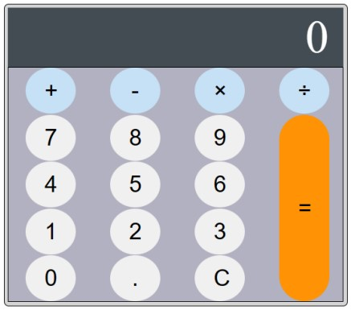

Exercícios Programação WEB
exercícios de web em geral para estudo
-
Exercício 3
Objetivos: Estudar como usar “display:grid” e criar uma calculadora. Tarefa: Criar uma calculadora como mostrada na Figura:
 Calculadora em HTML/CSS